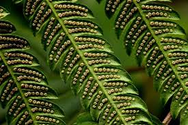
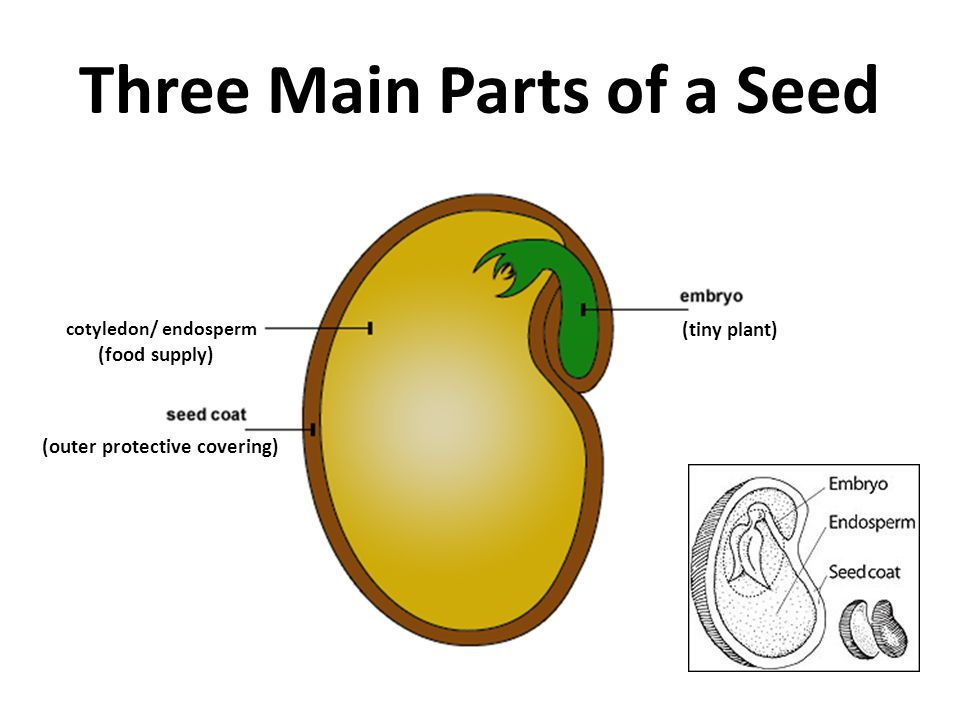
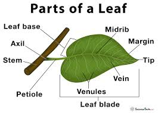
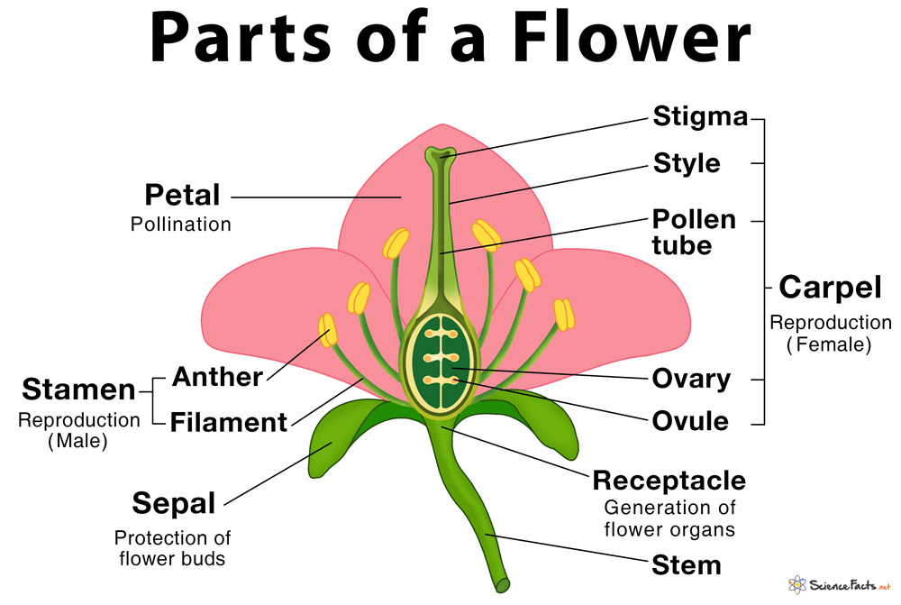

Plant And Animal Cell's


The Origin Of Plant's
The Closest Relative's To Modern Plants Are MultiCellular Green Algae.
The Evolution Of Modern Plants Required Many Adaptation's For These Survival Of Autotrophic Organisms On Dry Land.
After The Plants Became Established On Land.They Had To Adapt To -
Parts of A Plant

Seed's And Spore's
 Type's Of Root's

Leaf And Flower
 Haploid And Diploid

Terminologie's
Photo Periodism - The Developmental Reponse Of An Organism To Relative Length's Of Day And Night.
Photo Tropism - Growth Response To Light
Geo Tropism - Growth Response To Gravity
PhotoSynthesis - PhotoSynthesis Is The Process By Which Green Plants And Some Other Organisms Use SunLight To Synthesize Nutrient's From CO2 And Water In Presence Of Chorophyll
PolliNation - Pollination Is The Transfer Of Pollen Grain's From The Aether To The Stigma.
Fertilization - Fertilization Is The Process In Which The The Male And Female Gametes Fuse Together To Form A Zygote